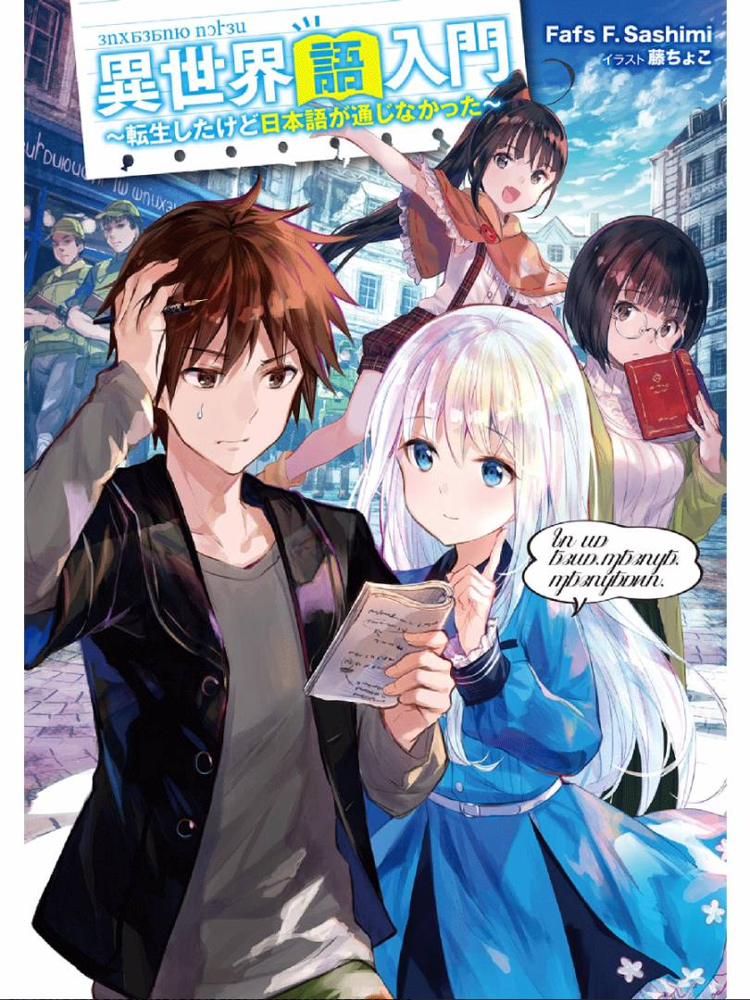

等意识到的时候八崎翠已经穿越到了异世界一个陌生的家中。
用得到的开挂能力成为后宫王，每天沉浸在欢歌乐舞中——对异世界生活有着这样期待的翠，在听到眼前的银发美少女夏莉雅出声之后，愣住了。
我居然听不懂她的话……？转生到的异世界居然不通日语。
翠赶紧慌慌张张的开始学习异世界语，想着可以尽早与她进行沟通。然而这个时候世界却发生了战争，被战争卷入的两人，被似乎是夏莉雅朋友的军人带到其他地方的避难所进行避难，但是，去避难的地方居然要和夏莉雅同住在一个房间里生活！？
语言相通的异世界就不是真正的异世界！？因为想和女孩子说话【超】纯粹的动机而开始学习异世界语言的故事！